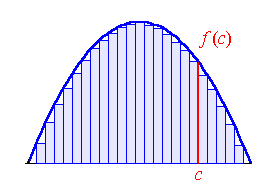
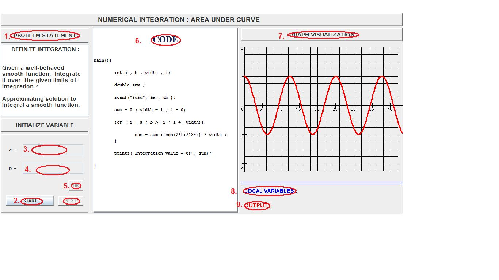

For many mathematical problems, such as finding area under a curve, it may not be possible to find an exact formula. But still these can be computed to arbitrary precision by using appoximate methods. In this lab you will learn how to code these approximation methods to solve these problems using a computer.

The problem finding area under a curve means calculating the area between a give curve and the x-axis( the line y=0), between two limits, say x=a and x=b. As you can remember from you high school mathematics, this problem is easily solvable by finding the integral of the function and plugging the values of the limits in the intergral. The difference of the limits gives the area under then curve. But there are some mathematical functions which are not integrable. Also, this method is applicable for only smooth functions. Can something be done to find the area under the curves which are not well behaved?
It turns out that people were able to "approximate" the solution to this problem to any reasonable arbitrary degree, for any arbitrary curve much before integration was discovered. As we all know that rectangle is the easiest of geometrical figures to find the area of, so the task of finding the area under a curve was expressed as a problem of finding the area of vertical rectangular strips. The boundary limits is divided into some x equal intervals of length(l) equal to l=(b-a)/n. Now, the area falling under each of these strips is approximated using an rectangle whose width is equal to the width of interval and height is equal to the value of the function at the beginning of the interval. A variation of this algorithm takes the value of the function at the middle of the interval. Now, the area under the curve is just the sum of areas of the individual strips.

It is easy to see that the result of this approximation would get better and better as the legnth of the interval is decreased. If they are made infinitesimally small, then we can get the exact area under the curve. But this is not possible using a computer where you can only specify numbers to a certain degree of precision. Still it is possible to approximate the area under the curve to a reasonable degree for practical purposes using a computer.

- To understand that for some problems an approximate numerial solution is as good as the exact solution for practical purposes.
- To understand how to apply these solutions to obtain arbitrary precision.


In this lab you calculate the area under the curve using approximation techniques.


Procedure for the experiment is as follows.
- Read the Problem Statement.
- Press START to start the experiment
- Select the limits of Integration i.e. a and b.
- Press OK to save the value of a and b.
- Press NEXT to see the execution of the code.
- Relavant line in the code is shown here.
- The visual simulation of area under curve and output of the code is shown in the right.
- Value of Local Variables are shown here.
- Output of code is shown here.
